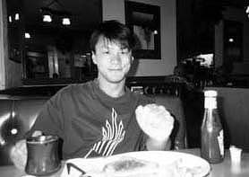

セドナ日記 〜 第４日目 98.5.7
場末のコヒーショップ
 セドナ最後の晩餐である。最後にふさわしいディナーはどこか？実は、ディナーの時間帯にやり忘れていることがあった。
それは「エアポートメサで日没をみて、その後の余韻も楽しむ」ということだった。エアポートメサでは、２、３日目の夕方、連続して夕日を見たが、日が沈むとともに、レストランに移動したため、「日没後の余韻を楽しんだり」、「月明りの下で、岩山を眺める」なんてことをできていなかった。通常の感覚では、そのようなことは、ばかげた事かもしれない。なぜに月明りのしたで岩山を眺めなければならないのか？ しかし、自然大好きな僕らにとっては、かなり、重要な事である。なにが、あるというわけではないが、何らかの「一体感」が期待できるのではないかと思っていた。実際、僕らも、ディナーにかまけて、そんなこと忘れていたのだから....。もちろん、美味しいディナーは重要である。しかし、同じくらい、「月明りの下で、岩山を眺める」ことも重要なのである。よって、この日のディナーは昨日までとは、うってかわって、庶民的なコーヒーショップで、ちょっと（かなり）アメリカンなディナーとなった。マクドナル説もあったが、却下され、ダウンタウンの真ん中に位置する、この店が選ばれた（名前忘れたしまったが、84Aを東に向かって左側にある）。場末感漂う雰囲気のレストランだが、清潔で店員の態度も悪くない。
大きなマグカップにコーヒー。サンドイッチにフレンチフライ大盛り。いかにもアメリカンである。でも、そこそこ、美味しかった。ちょっとうら寂しいアメリカンを体験したいなら、この店はお勧めである。